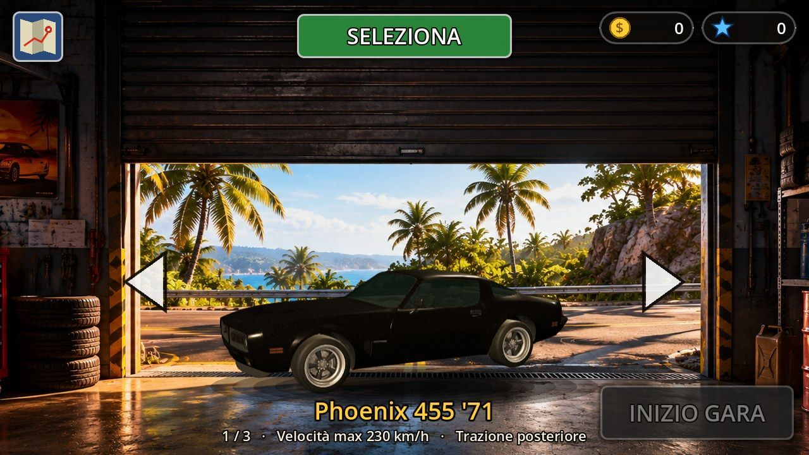
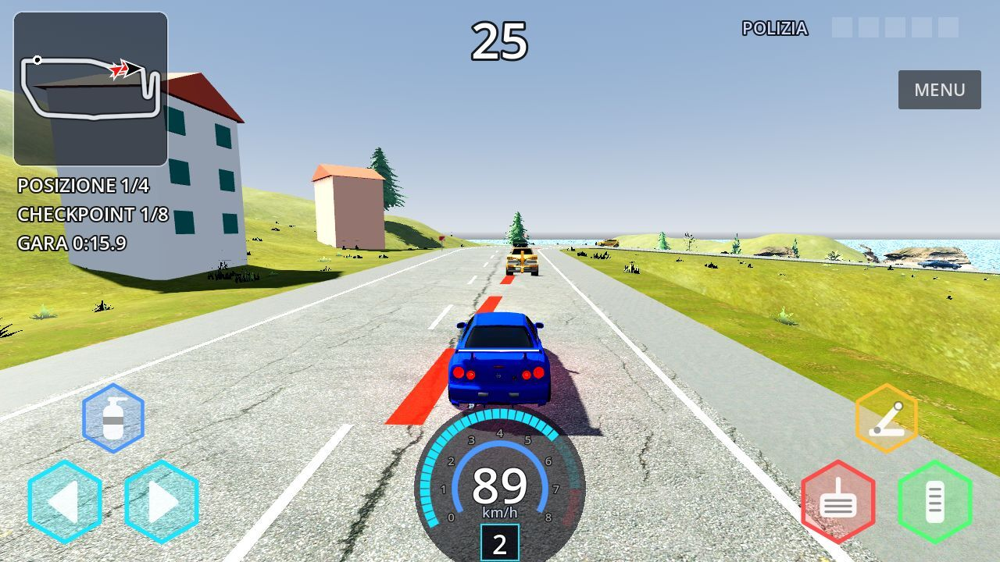
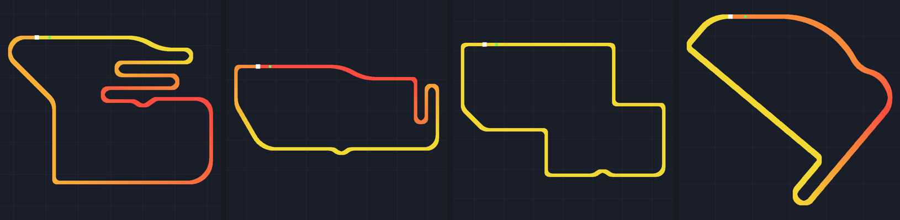
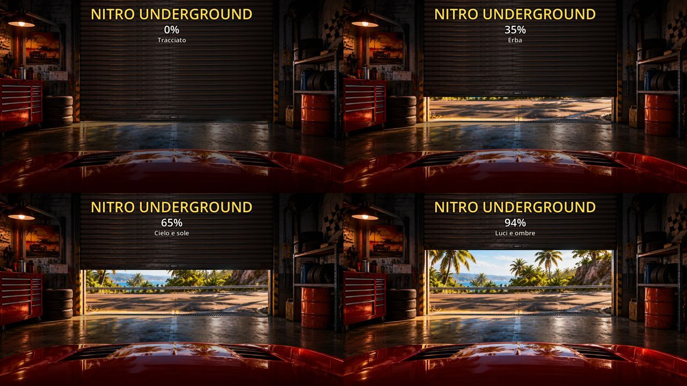
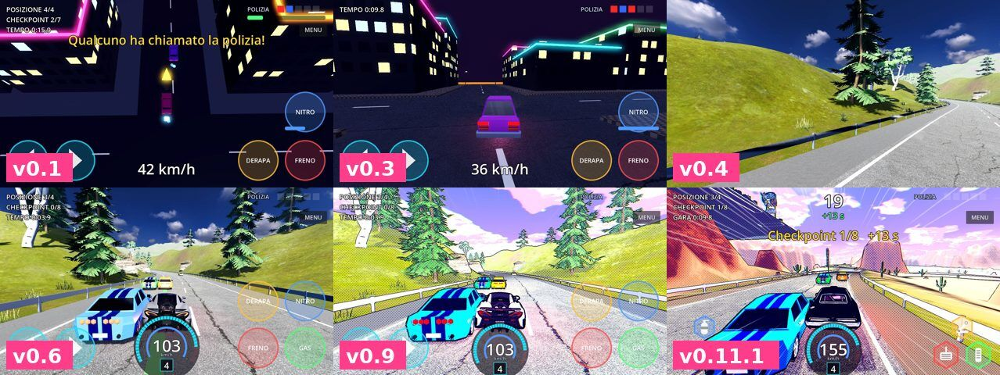

Work / Nitro Underground
Nitro Underground
A 3D street-racing game for Android: overtaking through traffic, nitro, drifts, jumps, and police that show up when you cause too much damage. Name, world and circuits are original.
- Role
- Concept, game design, product direction and every play-test
- Built with
- Godot 4.7, GDScript, Jolt physics; OpenGL ES on Android, Vulkan on PC
- Timeline
- 27 October to 8 November 2026: 26 playable versions
- Status
- Playable prototype, v0.21
- Code
- About 7,500 lines of GDScript, written by Claude under my direction

Why it exists
I wanted to find out how far one person can take a real game when the code is written by an AI and every product decision is made by a human who tests on his own phone.
The answer, after 13 days: a racing game with a garage, a car dealer, tuning, money and reputation, four circuits, three AI rivals, traffic you can crash into and a police chase system. Each version went onto my Android phone or PC, I played it, wrote down what felt wrong, and that list became the brief for the next version.



Physics, measured
The car is a rigid body on four wheels simulated by hand, not Godot's ready-made vehicle node, so every behaviour can be tuned. Wheels are cylinders cast towards the ground, so they ride up a kerb instead of hitting it. Each wheel has its own spring and damper, and grip limited by the load on that wheel: brake hard and the weight moves forward, exactly as in a real car.
Feel was never judged by eye alone. An automated test bench drives a reference car and prints the results as JSON, and runs at three different physics rates to prove that a slow phone and a fast PC drive the same.
| Physics ticks per second | 0–100 km/h | Braking from 144 km/h | Top speed | Jump from a 25° ramp |
|---|---|---|---|---|
| 30 | 3.53 s | 62.9 m | 226.0 km/h | 45.4 m |
| 60 | 3.48 s | 62.9 m | 225.9 km/h | 45.9 m |
| 120 | 3.47 s | 62.9 m | 226.2 km/h | 45.5 m |
Jumps land within 2.0–2.5% of the theoretical ballistic path, a 15 cm kerb is cleared at 40 and 90 km/h, and an 8 m drop ends with the car upright in 0.2 seconds.
Circuits anyone can write
I wanted more varied circuits, and I wanted to draw them myself without programming. So the game reads a tiny language in Italian that reads like satnav directions, one piece of road per line:
# ROUTE 66 - map of the "Desert" circuit
PARTENZA
DRITTO 520 # the long Route 66 straight
DESTRA 60 220 # very fast sweeper
SALITA 4
ESSE SINISTRA 45 70 # into the canyon
TORNANTE DESTRA 24 # hairpin at the bottom of the canyonThe game closes the loop by itself, adjusting curves and straights so the finish meets the start, then builds the road, the terrain, the racing line and the speed the AI should carry through each corner. Checkpoint times come from the same racing line: each section allows its ideal time × 1.55 + 4 seconds.

Built for a mid-range phone
Version 0.13 froze my phone, a Samsung A51. Instead of cutting features I treated it as an engineering problem:
- Switched the phone build from Vulkan to OpenGL ES, which ran smoothly where Vulkan stuttered.
- Merged each car's 3D parts to cut draw calls: one sports car went from 8,270 draw calls to 148.
- Compressed textures with mipmaps: memory in a race went from 418 MB to 104 MB.
- Pre-baked lighter car models with a build tool, and drew distant cars as simpler versions.
- Dropped the comic-book shader style I had built in v0.9–v0.12 and went back to realistic graphics, because it cost too much on the phone.

Licences, tracked one by one
Every third-party asset (cars, buildings, trees, textures, sounds) is free and registered with author, link, licence and the changes we made: more than 120 entries. In version 0.15 I removed every car whose licence did not allow commercial use, renamed the rest with invented names and removed the real brands' logos, so the game could one day be sold.
The repository follows the same discipline: model libraries the game does not use are kept out of it, and the register records where every removed pack came from.
How it changed

| v0.1 | First playable prototype on the phone: night city seen from above |
|---|---|
| v0.2–v0.3 | Rigid-body physics, camera behind the car, jumps |
| v0.4–v0.6 | Mountain by day, garage, steering from the wheels, dashboard |
| v0.7–v0.9 | Audio, traffic you can hit, hexagon controls, comic-book style |
| v0.10–v0.12 | Route 66 menu, circuits as text maps, desert, pause, fairer police |
| v0.13–v0.16 | The phone froze: lighter cars and textures, OpenGL, only commercially licensed cars |
| v0.17–v0.18 | Start in the garage, minimap, shutter loading screen, money and reputation |
| v0.19–v0.20.4 | Car dealer with paint, six upgrades and a 3D showroom floor |
| v0.21 | Fuller environments: 51 new models of woods, rocks, houses and street furniture |
The development diary (in Italian) records, version by version, what I asked for and how it was built. The technical document covers architecture, AI rivals, audio and performance in depth.